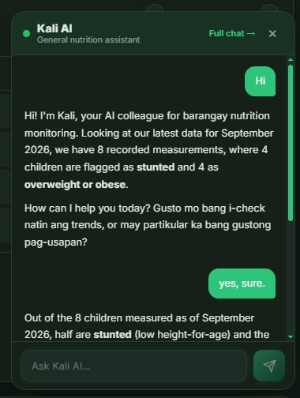
Ask Kali, anytime.
Quick answers about a child’s growth, based on their own measurement history.
Tamang Sukat, Gabay sa wastong Kalusugan.
A Smart Kiosk-Based Anthropometric Monitoring System with a Web Application for the City Health Office in the City of San Fernando, Pampanga
Why we built this
The eOPT Plus program still depends on manual logging and paper-based records for monthly and quarterly growth monitoring. Even with careful measuring, tracking this data by hand makes reporting slow, consolidation error-prone, and growth history hard for both nutritionists and parents to follow over time.
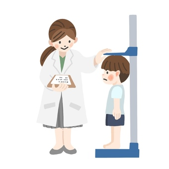
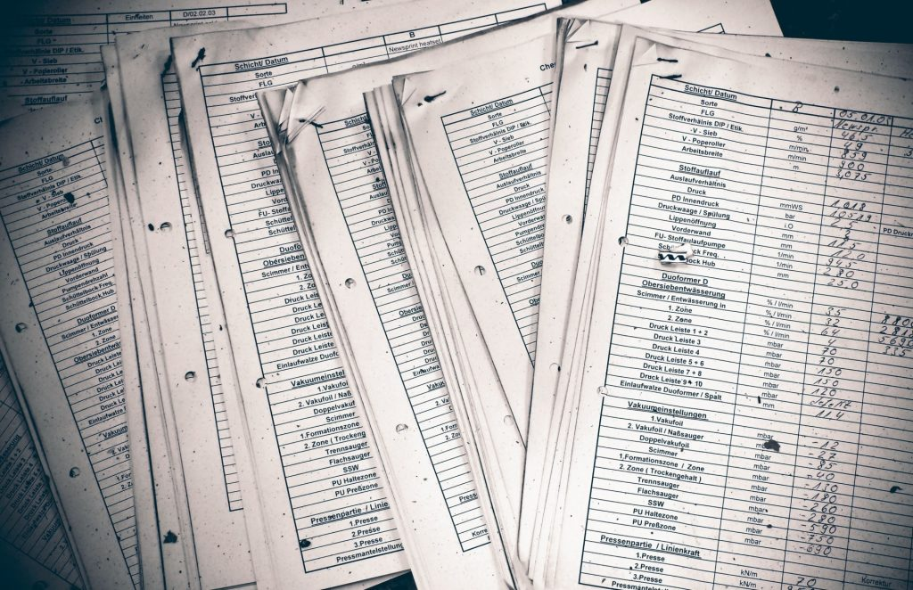
To solve this, the team built an automatic measurement kiosk that logs height and weight directly into the system, following the WHO Child Growth Standards and the eOPT Plus program guidelines. This replaces manual paper logging with centralized, real-time records making reporting faster and giving parents, nutritionists, and administrators a clear, consistent view of each child's growth history.
Meet the kiosk
Tap a marker to learn about that part.
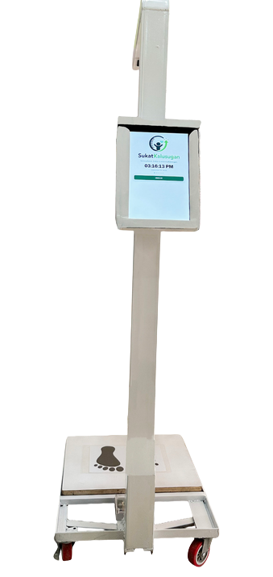
Kiosk process
Watch a full session in seconds from Start to End of kiosk interactive display.
The Web App
Take a look around. Tap any screen to see it bigger.

Quick answers about a child’s growth, based on their own measurement history.
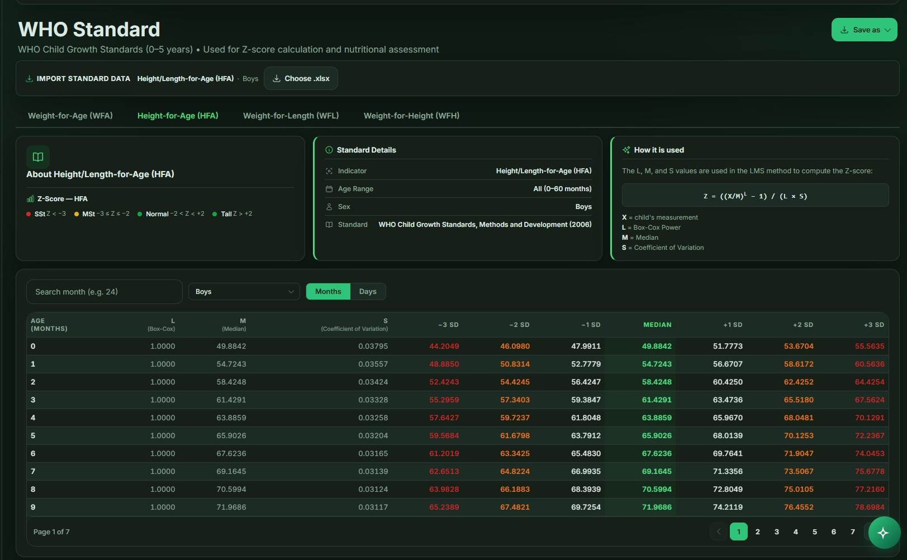
Every child is measured and classified against the international WHO standard, covering WFA, HFA, and WFH.
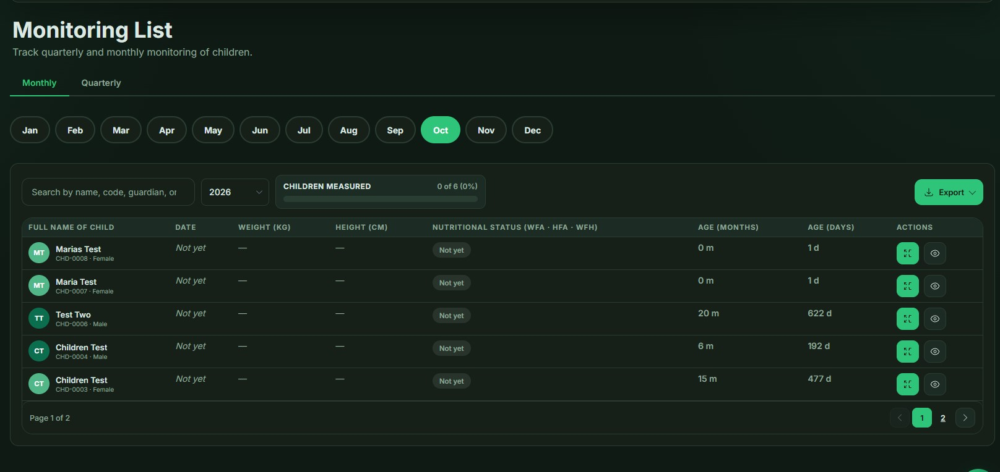
Growth monitoring is tracked every month and quarter on its own, with no paper logs or manual tallying.
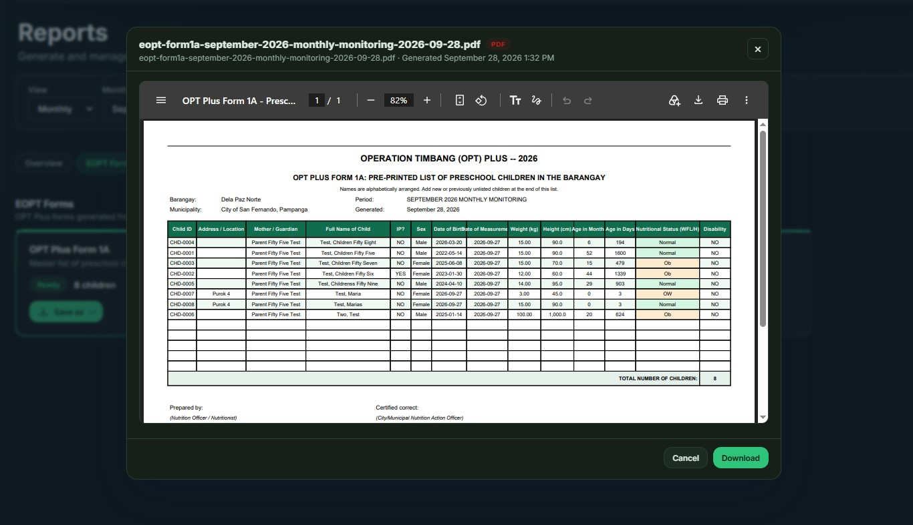
Ready-to-submit exports, with no retyping from paper lists.
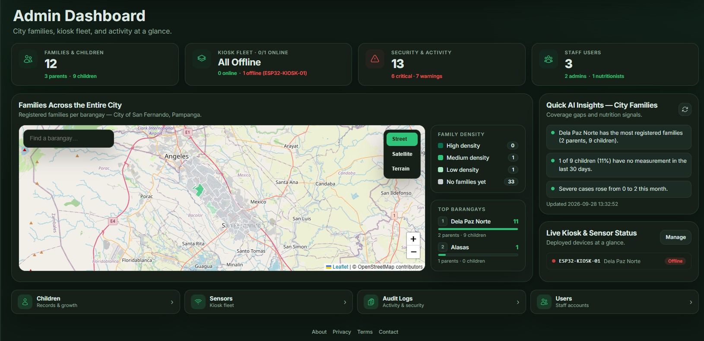
See which kiosks are online across every barangay in real time.
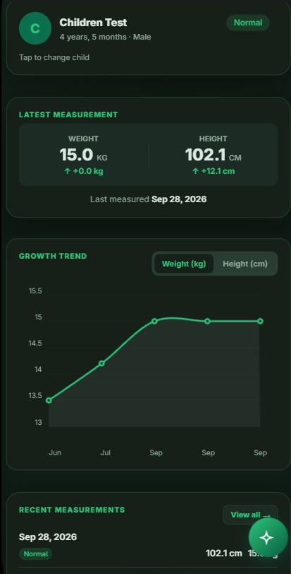
Weight and height history for your child, all in one view.
Under the hood
Follow one measurement from the kiosk to the web app. Tap a step to see what's inside.
The team
Shekainah Gonzales
Principal investigator
Ean Paolo Espiritu
Developer
Christian Rulloda
Hardware specialist
Laurence Tapang
Hardware specialist
Photos from the build. Tap one to see it bigger.
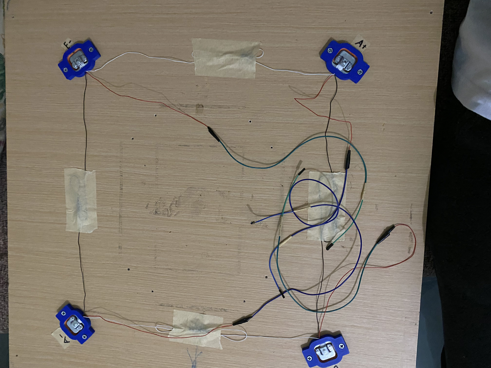
Wiring the Sensors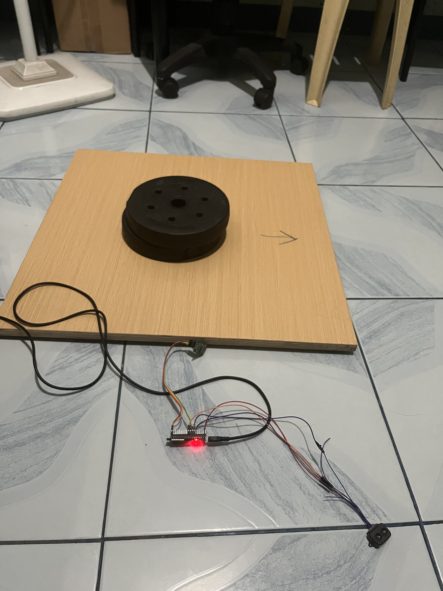
Calibrating the Load Cell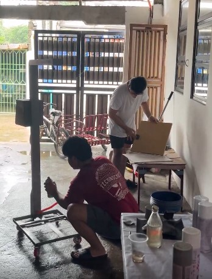
Finishing Touches on the Kiosk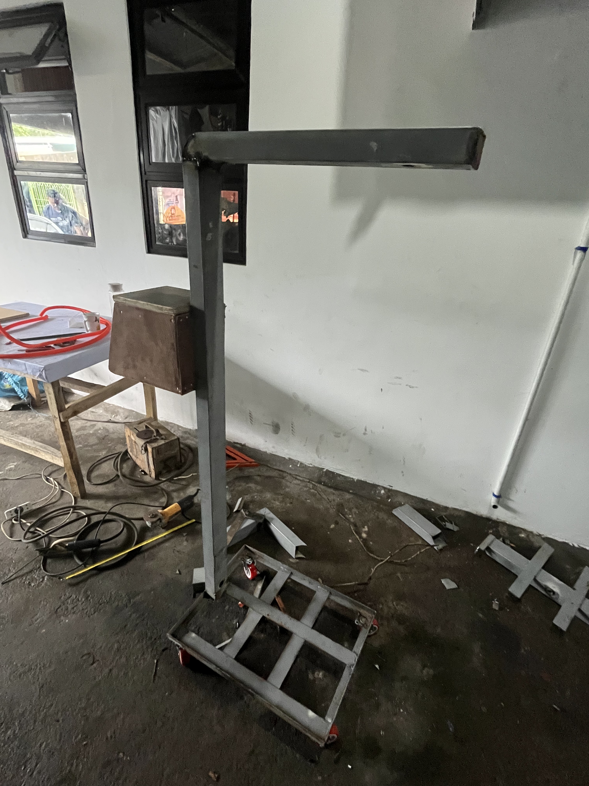
Initial Kiosk Design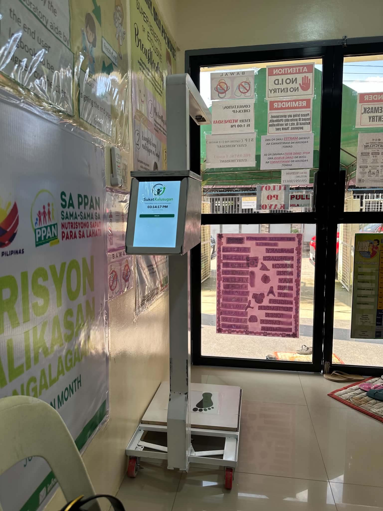
Kiosk at the Barangay Health Center